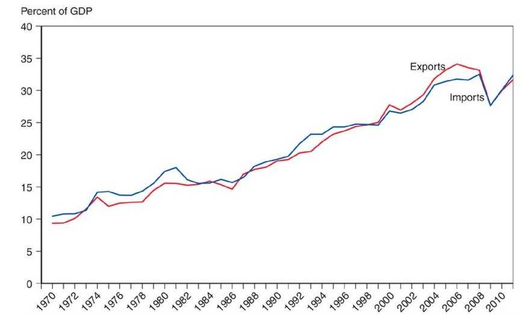

8 Trade Policy in Developing Countries: part B
8.1 Prospects of International Trade of Developing Countries
Developing countries have become major players in global trade. Their relative weight has grown enormously, mainly due to China’s meteoric rise as an exporter. Though they partly reflect surging oil prices, increasing exports from the Middle East and North Africa (MENA), Eastern Europe, and Central Asia have further increased the weight of developing countries in world trade.
GDP projections suggest that the share of world trade held by developing countries will expand further, more than doubling over the next 40 years and reaching nearly 70 percent by 2050.
8.1.1 Trade Liberalization since 1985
Beginning in the mid-1980s, a number of developing countries moved to lower tariff rates and removed import quotas and other restrictions on trade. The shift of developing countries toward freer trade is the big trade policy story of the past two and a half decades.

After 1985, many developing countries reduced tariffs, removed import quotas, and in general opened their economies to import competition. Figure 7a shows trends in tariff rates for an average of all developing countries and for two important developing countries, India and Brazil, which once relied heavily on import substitution as a development strategy. As you can see, there has been a dramatic fall in tariff rates in those two countries. Similar if less drastic changes in trade policy took place in many other developing countries.

Trade liberalization in developing countries had two clear effects. One was a dramatic increase in the volume of trade. Figure 7b plots exports and imports of developing countries, measured as percentages of GDP, since 1970. As you can see, the share of trade in GDP has tripled over that period, with most of the growth happening after 1985.
8.1.2 Trade and Growth: Takeoff in Asia

Figure 7c illustrates the Asian takeoff by showing the experiences of three countries: South Korea, the biggest of the original group of Asian “tigers”; China; and India. In each case, we show per-capita GDP as a percentage of the U.S. level, an indicator that highlights the extent of these nations’ economic “catchup.” As you can see, South Korea began its economic ascent in the 1960s, China at the end of the 1970s, and India circa 1990.
8.2 Case: India’s ecoonomic growth
India, with a population of more than 1.1 billion people, is the world’s second-most-populous country. It’s also a growing force in world trade especially in new forms of trade that involve information rather than physical goods. The Indian city of Bangalore has become famous for its growing role in the global information technology industry.
Yet a generation ago, India was a very minor player in world trade. In part this was because the country’s economy performed poorly in general: Until about 1980, India eked out a rate of economic growth—sometimes mocked as the “Hindu rate of growth”—that was only about 1 percentage point higher than population growth. This slow growth was widely attributed to the stifling effect of bureaucratic restrictions. Observers spoke of a “license Raj”: Virtually any kind of business initiative required hard-to-get government permits, which placed a damper on investment and innovation. And India’s sluggish economy participated little in world trade.
After the country achieved independence in 1948, its leaders adopted a particularly extreme form of import-substituting industrialization as the country’s development strategy: India imported almost nothing that it could produce domestically, even if the domestic product was far more expensive and of lower quality than what could be bought abroad. High costs, in turn, crimped exports. So India was a very “closed” economy. In the 1970s, imports and exports averaged only about 5 percent of GDP, close to the lowest levels of any major nation.
Then everything changed. India’s growth accelerated dramatically: GDP per-capita, which had risen at an annual rate of only 1.3 percent from 1960 to 1980, has grown at close to 4 percent annually since 1980. And India’s participation in world trade surged as tariffs were brought down and import quotas were removed. In short, India has become a high-performance economy. It’s still a very poor country, but it is rapidly growing richer and has begun to rival China as a focus of world attention.
The big question, of course, is why India’s growth rate has increased so dramatically. That question is the subject of heated debate among economists. Some have argued that trade liberalization, which allowed India to participate in the global economy, was crucial. Others point out that India’s growth began accelerating around 1980, whereas the big changes in trade policy didn’t occur until the beginning of the 1990s.
Whatever caused the change, India’s transition has been a welcome development. More than a billion people now have much greater hope for a decent standard of living.
8.2.1 The Rising Weight of Developing Countries in World Trade
Developing countries are already playing an increasing role in world trade. In 2006, they accounted for 30 percent of world exports, up from 19.5 percent in 1996.
The share of exports held by the BRIC economies (Brazil, Russia, India, and China) more than doubled, rising from 6 percent to 12.4 percent. China accounted for a significant portion of this rise—its claim of world exports nearly tripled from 2.7 percent to 7.6 percent.
Trade and investment have risen not only between the rich countries of the North and the developing economies of the South, but also among countries in the South.
8.2.2 The Rise of South-South Trade
Over the past two decades, trade and investment have risen not only between the rich countries of the North and the developing economies of the South, but also among countries in the South, particularly—though not exclusively—involving Asian nations.
China and India significantly increased imports from MENA and SSA, partly due to rising commodity demand, with China absorbing $32.5 billion in exports from them in 2006, up from just $545 million in 1996.
Bilateral trade between China and India has grown increasingly significant as well, with exports from China to India jumping from $686 million to $14.5 billion.
Reference: Chapter 11- Trade Policy in Developing Countries (Paul Krugman, Maurice Obstfeld, and Marc Melitz, International Trade: Theory and Policy, 11th edition)